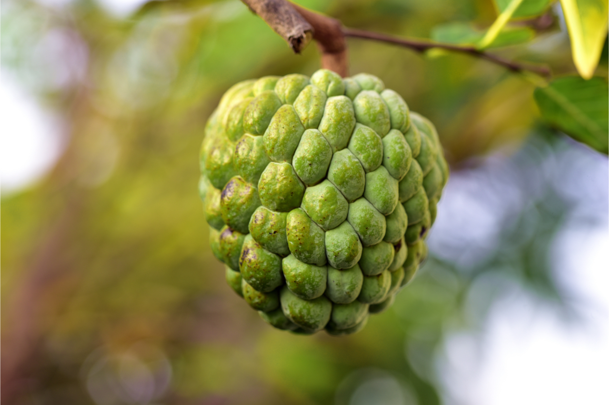
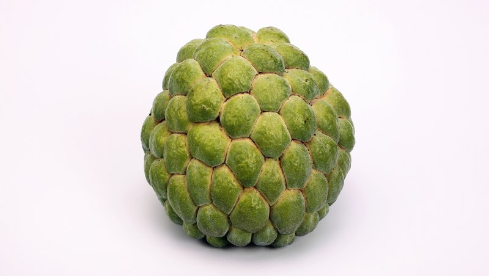

東部
|  |  |
熱量 :
120/個
水果介紹 :
果實為聚生果，呈心臟形或圓錐形，未熟果綠色，成熟果呈淡綠黃色，外表被以多角形小指大之軟疣凸起，似佛頭；果肉乳白色，漿質、柔軟、稍帶膠狀，味甜而微帶酸，並具芳香，種子大而色黑，有光澤。
營養成分 :
水分、白質、脂肪、醣類、纖維、灰分、維生素B1、維生素B2、維生素B6、維生素C、鈉、鉀、鈣、鎂、磷、鐵、鋅
挑選方式 :
果粒大，果形完整端正，果皮淡黃綠色，鱗目大小一致。
果園介紹 :